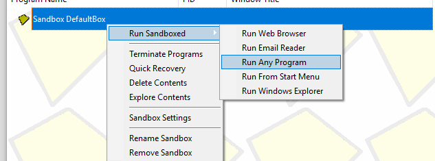
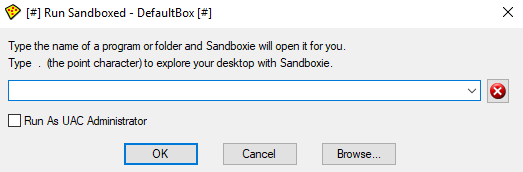
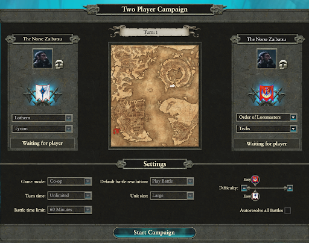

Self-Testing Multiplayer (Battle & Campaign)
By Norse Zaibatsu
So you want to test MP campaign features?
You’re in luck, Pete from CA helped me figure a way to LAN with yourself! (Thanks Pete!)
You’re going to need:
- A beefy computer (It’s two copies of WH2, what did you expect?)
- Sandboxie, a lightweight sandboxing tool to let you get multiple Steam clients running.
- WH2, but I’d hope you already own that at this point.
Disclaimer
- This might occasionally crash on loading MP campaigns due to startpos unpacking issues. You may have to try a few times to get it to launch. Custom batles should be more stable.
- The -multirun start parameter is not currently supported by the Total War launcher. You'll have to swap back to the old launcher through changing the branch of Warhammer 2 to the launcher candidate branch.
Setting up Sandboxie
When you open Sandboxie for the first time, you will be greeted by this:

Don't be alarmed, this program is very intuitive. Right click your default sandbox and navigate to “run any program”

You'll be greeted by this dialog.

Find your Steam folder outside Sandboxie and copy the directory

Press "OK". A new sandboxed folder will open. You can tell that the window is sandboxed because it has two hashtags around the name.

Run Steam from inside this folder to open a sandboxed version of Steam. It might have to update. Once you have got that running, switch your sandboxed Steam version to offline mode.

In both Steam versions you now have open, right click on Total War: Warhammer 2 and go to Properties. In the Properties dialog, click on "Set Launch Options" tab and add the following: -multirun

You’re basically good to go! Just launch WH2 with both steam clients. Note that only your host computer, the one outside the sandbox, is going to be able to host games. But your client computer inside the sandbox can join them!

This will also work for custom battles! Happy testing!